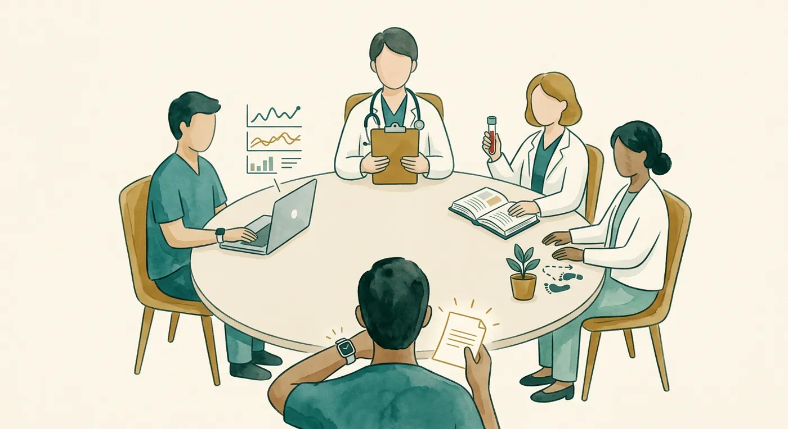

FRONTIER WATCH 03 / 前沿观察
谷歌的个人健康智能体，是按“会诊”的样子搭起来的。
结论先说：Google 团队发现，让一个大模型同时“算数据、讲医学、做教练”顾此失彼，于是拆成三个专科智能体，再由一个统筹者派活、汇总、反思。在 11 项评测、7000 多条标注、1350 小时人工评估里，这套多智能体系统整体好于单个智能体。但它证明的是“对话质量更好”，不是“用了更健康”，而且每轮回答要等 3 分多钟。
先看作者的原帖
作者：A. Ali Heydari（Google，论文共同第一作者）。到 LinkedIn 观看原帖 ↗
它要解决什么问题
研究者先做了一轮“用户需求调查”：整理 1,370 条来自搜索引擎和健康论坛的提问、555 名用户的健康目标问卷，再开一场 14 位设计和工程专家的工作坊。归纳出普通人找 AI 问健康的 4 类场景：
- 一般健康知识：比如“高强度间歇训练有什么利弊？”
- 解读个人数据：比如“上个月走的步数怎么影响我的静息心率？”
- 健康生活建议：比如“想提高睡眠分，几点睡比较好？”
- 症状评估：比如“嗓子痒、吞咽不舒服，可能是什么？”
这四类需要的能力互相拉扯：解读数据要精确计算、能写代码；当教练要开放、有同理心的对话；讲知识和症状要有事实依据。论文原话的意思是：一个“大一统”的模型很难同时兼顾这几种目标，所以改用模块化的多智能体。
它是怎么搭的：一个统筹者 + 三个专科
图为本站根据论文正文和图 1、图 5 自绘的简化示意，不是论文原图。
打个比方：这就是急诊的“首诊负责 + 会诊”。病人只面对一位主治（统筹者），主治判断要请哪些科、把问题拆给谁、收回意见后再整合成一个处理方案；病人不需要分别听三个科各说一遍。
拆问题、派会诊、对结果负责并汇总。
把原始数据变成准确的数字和趋势。
结合指南和文献解释这些数字意味着什么。
把建议落成病人做得到的小目标。
术语：“迭代反思”指统筹者把各专科的结果交给彼此再看一遍，例如教练会先看数据智能体算出来的睡眠，而不是再问用户“上周睡了多久”。
关键数字
专家盲评：哪套系统整体质量最好（各系统被评为第一的比例）
3 位健康专家评估真实对话记录。论文原文称 PHA 被选为第一的比例“大约是 PHIA 的五倍”（66.7% vs 12.6%）。作者在 LinkedIn 上说的“专家偏好高 5 倍”，在论文里对应的应是这个排名比例。专家给的整体质量分：PHA 72.8%、并行 64.3%、PHIA 54.4%。
普通用户：把哪套系统排第一（45 名用户，真实多轮对话）
普通用户之间的差距明显小于专家。论文的解释是：专家能看出普通用户不容易察觉、但对安全和长期效果很重要的差别。
代价：每轮回答的平均等待时间（秒）
按需派活的 PHA 比“三个专科一起上”的并行方案更省，但仍是单智能体的 5 倍多时间。数据来自论文 Methods「Computational cost」。
- 数据科学：分析计划评分 75.6% vs 53.7%；代码一次通过率 75.5% vs 58.4%，最多 5 轮自我纠错后到 79.0%。
- 领域专家：2000 多道专科考试选择题准确率 83.6% vs 81.8%；2,000 个真实症状病例的鉴别诊断，首位诊断准确率 46.1%，比此前最好的诊断对话智能体高 4.7 个百分点。
- 临床摘要：5 位临床医生盲评 30 名参与者的多模态健康摘要，被评为“有用/很有用”的 65% vs 30%。
- 健康教练：31 名用户盲法、顺序平衡的对比中，6 个主题里 5 个更受偏好（胜率 61%–71%）；唯一落后的是“进度跟踪”。3 位教练专家复评时优势更大。
临床医生对这些健康摘要做了安全审查：83% 无或仅有极小潜在危害，15% 有轻度潜在危害，2% 有中到重度潜在危害。论文自己也把这一点列为需要重视的问题。
冷静看：证据还差什么
| 问题 | 具体情况（来自论文讨论部分） |
|---|---|
| 证明了什么 | 只证明了对话质量和短期任务效果，没有证明能持续改变行为，也没有证明能改善长期健康结局。这需要多次随访、长期使用的研究。 |
| 评审员是 AI | 部分评测用大模型当“自动评分员”，它会受回答顺序、格式、长度和来源影响，需要不断用人类盲评交叉核对。 |
| 只有 Fitbit | WEAR-ME 数据以 Fitbit 为主，换其他设备是否同样有效未知。病历数据也只用到了血液化验。 |
| “代入角色”偏差 | 真人测试者是按 WEAR-ME 人物档案去“扮演”提问的，不是为自己的健康提问，偏差无法完全消除。 |
| 人群不够广 | 需要在不同设备、语言、读写水平和人群中评估，特别是老年人和残障人士。中文场景没有测试。 |
| 慢、贵 | 每轮 6.5 次模型调用、205.3 秒，资源有限的场景难以推广。 |
| 定位与利益 | 论文明确说它是面向消费者健康的研究原型，不是诊断或分诊系统，不应替代专业诊疗。多数作者是或曾是 Alphabet 员工。 |
对我们医生意味着什么
拆分角色 + 统筹汇总，在这项评测里让专家明显更满意；三个专科各自也在对应任务上好于同底座的单模型。代码已开源（Apache 2.0），可以拿来复现。
多智能体的好处和代价都和医院会诊很像：分工让每个环节更专业，但交接多了，时间更长、责任链更长。设计院内 AI 流程时，也要先回答“谁是首诊、谁签字”。
急诊带教可以借这个结构练“会诊单”：让学员把一个复杂病例拆成数据、知识、宣教三份任务，再自己当统筹者汇总。这是教学用法设想，未经验证。
没有中文、没有国内设备、没有老年和急危重症人群；最关键的“是否改善健康结局、是否延误就医”还没有前瞻性研究。症状评估这块，论文自己也说不能给出诊断。
训练营里的智能体课程可以接着看：多智能体协作：一个 AI 不够，就组一支队 · 论文精读：谁派活，谁负责到底（RCM）。
作者在 LinkedIn 说，这项研究是 Google Health 应用里 Google Health Coach 的基础。论文正文没有写这一点，这里只作为作者本人的说法。
课堂练习：用“会诊单”拆一个多智能体系统
来源
原始来源：Heydari AA, Gu K, Srinivas V, et al. The anatomy of a personal health agent. Nature (2026), 2026-10-21 在线发表. DOI: 10.1038/s41586-026-11161-8 ↗（开放获取）· 开源代码 ↗ · 作者 LinkedIn 原帖 ↗。本页是 aiai 学院的中文解读，数字以原文为准；“合理联想”“我的设想”属个人观点，不构成医疗建议。